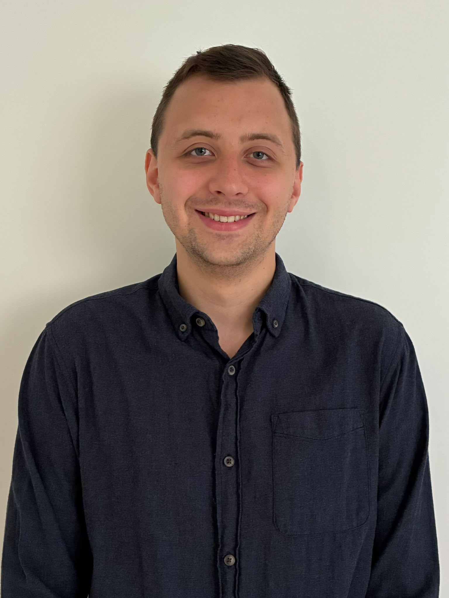

Passionate about petroleum refining, reaction kinetics, biotechnology, process optimization, sustainable engineering, and industrial problem solving.
Research Projects
Scientific Publications
Countries of Experience
Languages Spoken
I am currently studying Chemical Engineering and Biotechnology at Aalborg University. My experience spans laboratory research, microbiology, analytical chemistry, process optimization, reaction kinetics and data analysis. I enjoy applying scientific principles to solve real industrial problems and create practical process improvements.
2024 – Present
Leading kitchen operations, supervising staff and maintaining quality standards during high-volume production.
University of Melbourne Bio21 Institute
2023 – 2024
Conducted microbiology and enzyme kinetics research, maintained laboratory standards and contributed to peer-reviewed scientific publications.
Investigation of formaldehyde chemistry, ammonium salt formation, fouling mechanisms and refinery process chemistry.
DNA extraction, growth studies, enzyme optimization and sulfur metabolism research.
Statistical modelling, CellProfiler image analysis and experimental optimization.
National Division basketball in Moldova and Denmark's 2nd Division.
Competitive chess player interested in strategic thinking and decision making.
Exploring cultures, history and international perspectives.
Combining creativity, precision and continuous improvement.
Email: anasta24@student.aau.dk